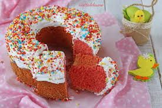
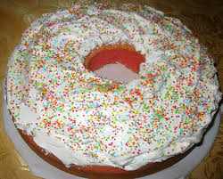

Qui vedrai tutte le ricette inserite nel programma Java
Tempo di preparazione: 00:45
Impastare le uova e lo zucchero con metà dose di farina e la margarina.
Ottenuto un composto liscio ed omogeneo aggiungere l'altra metà della farina, il latte, l'Alchermes e la bustina di lievito.
Il composto ottenuto va informato in una teglia per ciambelle oppure in una teglia con al centro un bicchiere contenente 2 dita d'acqua come contrappeso (oppure qualsiasi altra cosa che dia peso, tipo i legumi secchi, etc).
Portare il forno a 175°C, infornare e cuocere per 35 minuti.
Nel frattempo sbattere a lungo gli albumi con lo zucchero tenendo il contenitore a bagnomaria (come per le meringhe) fino ad ottenere un composto spumoso e liscio che inizia a cristallizzare sul bordo della ciotola.
Appena cotta la ciambella sfornarla e spegnere il forno. Eliminare il bicchiere e il bordo della teglia se rimuovibile, distribuire le chiare montate sopra il dolce, distribuire una spolverata di codette colorate e rimettere nel forno caldo fino al completo raffreddamento dello stesso.

